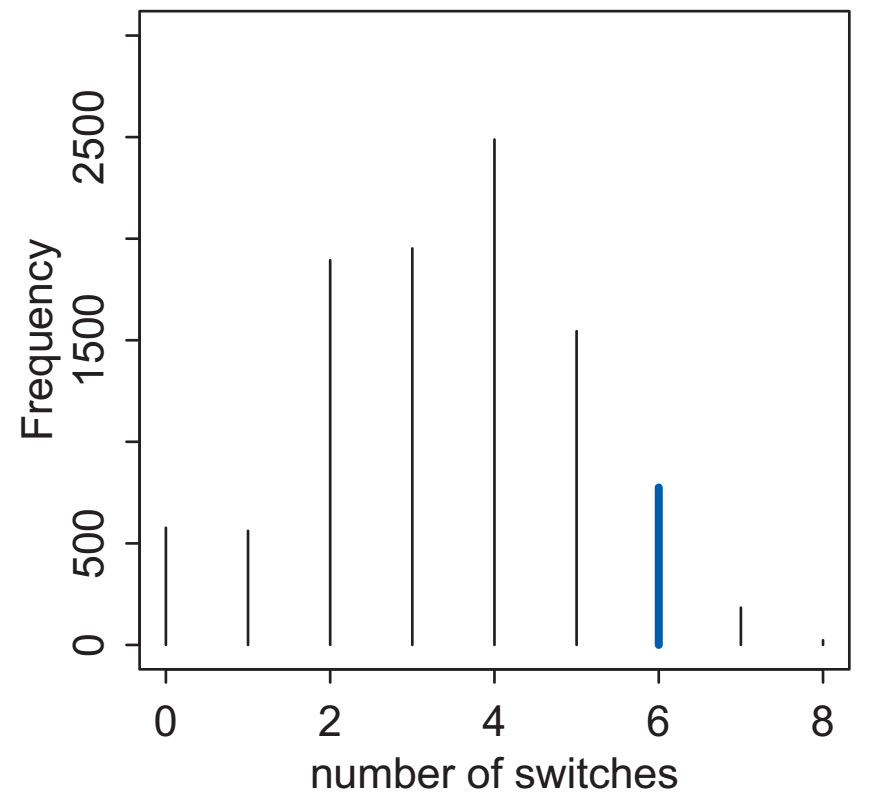

Sampling the Imaginary
EES 5891-03
Bayesian Statistical Methods
Jonathan Gilligan
Class #3: Thursday, Sept. 1 2022
Philosophical Prelude about Sampling
Dichotomies
- This chapter has a lot of dichotomies:
- Bayesian vs. non-Bayesian (frequentist) statistics
- Formulas (analytical math) vs. Frequencies (samples)
- Parametric vs. Non-parametric approaches.
- Dichotomies don’t mean one alternative is right and the other is
wrong, or one is better than the other.
- Newtonian vs. Lagrangian mechanics in physics
- Inclusive fitness vs. multilevel selection in evolutionary biology
- Bayesian vs. non-Bayesian statistics
- In each case, switching between the perspectives gives us a richer view of each, help us pick the right tool for a particular job.
Formulas vs. Frequencies
- Samples and natural frequencies can be more intuitive and easier to understand.
Many scientists are uncomfortable with integral calculus, even though they have strong and valid intuitions about how to summarize data. Working with samples transforms a problem in calculus into a problem in data summary, into a frequency format problem.
…
An integral … can be a challenging calculus problem. But once you have samples from the probability distribution, it’s just a matter of counting values.
— Statistical Rethinking, p. 51.
Sampling from the Posterior
Grid Sampling
-
There are two levels here:
- Generate the posterior from grid-samples of the prior and posterior
- Draw a random sample of points from the grid-sampled posterior.
-
Grid-sampled posterior for 9 tosses of the globe, with 6 water:
-
Now sample 10,000 points from the grid-sampled posterior
Sampled Posterior
Analyzing Sampled Posterior
- What can we do with samples drawn from the posterior?
- Summarize the posterior distribution
- Percentile intervals (PI)
- Highest probability-density intervals (HPDI)
- Point estimates
- Simulate prediction
- Designing models
- Will your model be able to infer parameters from data?
- Checking correctness of models and code
- Does your model accurately describe the data?
- Designing research
- Will data from a planned project be sufficient to answer relevant questions?
- Forecasting
- What does your model imply about the future?
- Designing models
Probability Intervals
-
Probability Mass: The area under an interval of the
posterior density curve.
- Related to cumulative probability
-
Percentile Intervals contain a certain probability
mass, with equal tails on either side
- e.g., middle 80% of probability mass
- Highest Probability-Density Intervals (HPDI) contain a certain probability mass located at the region of highest probability density.
Percentile vs. Highest Probability Density Intervals
- Percentile Intervals are symmetric, but may omit the highest probability density
- Highest Probability-Density Intervals (HPDI) Make sure to contain the highest density region, but may be unstable from one sample to another.
- If the posterior is reasonably smooth and symmetrical, these two intervals should be very similar.

Point estimates
- Extract a single point and ignore the rest of the distribution.
- MAP (maximum a-posteriori), the mode of the posterior
- median of the posterior
- mean of the posterior
- How would you choose what point estimate to use?
- Loss function: What are the consequences of being wrong?
- Hurricane forecasting: Consequences are much worse if the wind is stronger than forecast, than if the wind is weaker.
- There’s no universal best method for point estimation. You need to choose a method to fit the specific problem you’re trying to solve.
Sampling to Simulate Prediction
Sampling to Simulate Prediction
- Model design: Will your model be able to produce good analysis from
the kind of data you expect to get?
- Working with dummy data can be very helpful.
- Model checking and software validation: After you fit a model to real data, do you trust the fit?
- Research design: Will your research design produce enough data, and good enough data for your model to answer your research questions?
- Forecasting: Use your model to make predictions about the world.
Dummy Data
- Before using your model on real data, always test it on dummy data.
-
Generate simulated data by sampling from a distribution with known parameters.
Example: Simulate 100,000 repetitions of an experiment with 9 tosses of a globe that’s 70% water.
Analyze the simulated data the same way you’d analyze your real data.
-
Compare the posterior estimates of the parameters to the actual values you used to simulate the data.
- Fit the 100,000 repetitions. How close are the estimates of \(p\) to the true value (0.7)?
-
Using Samples to Diagnose Model Fits
- You have fit a model to real data
- You want to understand how well the model fits the data.
- Posterior Predictive Distributions
- Sample from your posterior for the model parameters
- \(p\), proportion of water
- For each sample, use your model to simulate the data.
-
rbinom(n, size = 9, prob = p)to simulate n repetitions of 9 tosses with proportionp.
-
- Combine the simulated experiments for different samples of the posterior to produce a posterior predictive distribution.
- Sample from your posterior for the model parameters
Posterior Predictive Distribution
Additional Diagnostics
- Maybe the problem wasn’t with your model but with your experiment.
- If you don’t spin the globe enough when you toss it, there will be a correlation between the position when you tossed it and when you catch it.
- If your finger is in the middle of the Pacific Ocean when you toss it, it’s more likely you’ll catch it on water.
- Check longest consecutive run of W or
L
- Experiment saw 3
- Check number of switches between W and
L in 9 tosses.
- Experiment saw 6
